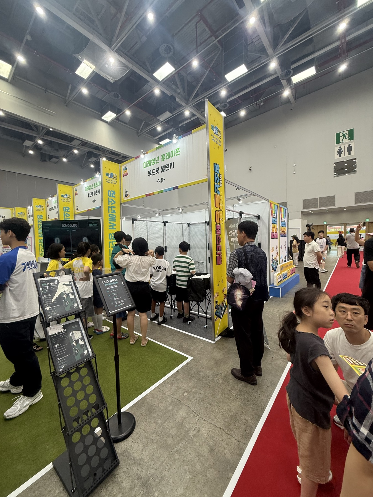
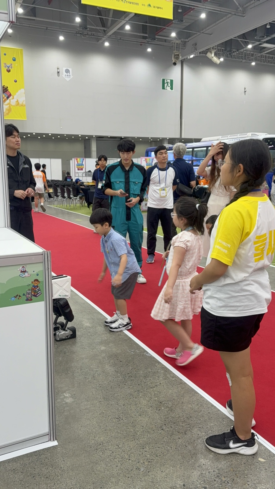
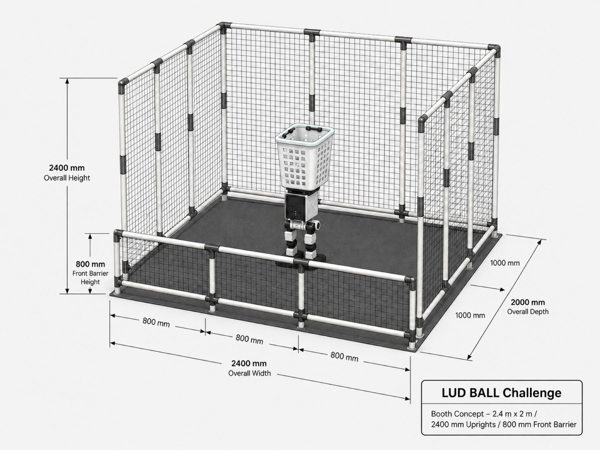
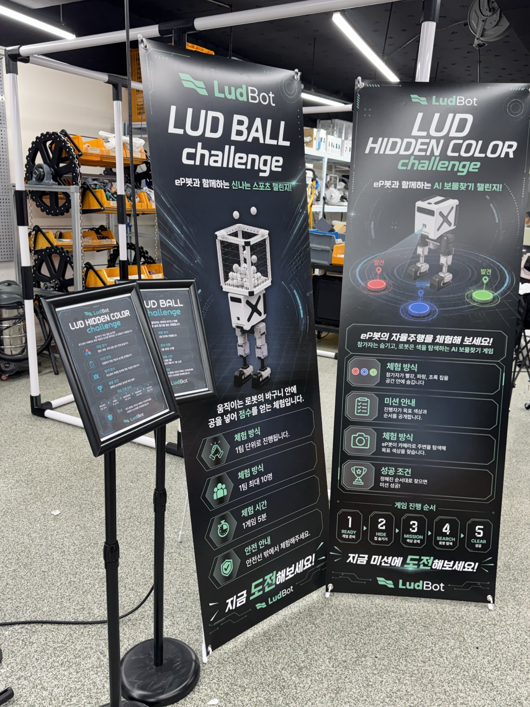
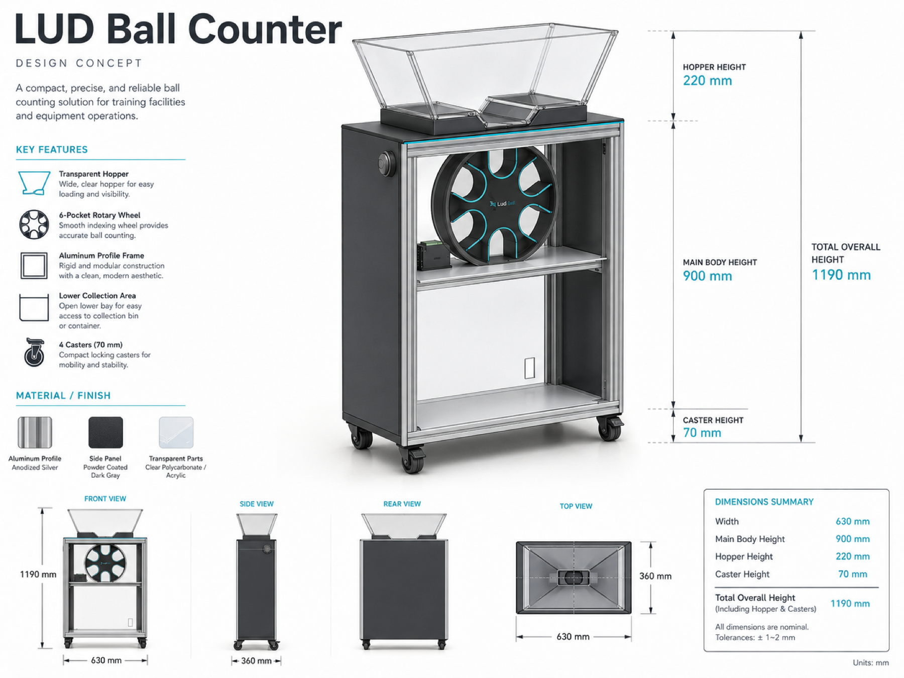

520명+
하루 약 200명, 200명, 마지막 날 약 120명 기준으로 총 520명 이상이 체험했습니다.
Daegu Youth Invention Festival · Geekble Booth
긱블 부스 운영 PM으로 Ludball Challenge의 부스 구성, 행사 구성품, 체험 동선, 현장 운영, 후속 제작 확장까지 직접 수행했습니다.

부스 설계, 구성품 기획, 현장 운영
규칙 설명, 대기열, 체험 회전율 관리
3일간 Ludball Challenge 직접 운영
Daegu EXCO · Ludball Challenge
하루 약 200명, 200명, 마지막 날 약 120명 기준으로 총 520명 이상이 체험했습니다.
첫째·둘째 날 각 50회, 마지막 날 약 30회 사이클을 기준으로 체험 흐름을 관리했습니다.
1사이클 4명 운영을 기준으로 잡고, 현장 상황에 따라 5명까지 유연하게 조정했습니다.
2.4m x 2m 규모의 Ludball Challenge 부스 구조를 직접 설계했습니다. 전면 안전 배리어, 네트, 체험 공간, 관람객 시야, 로봇 동작 범위를 함께 고려해 현장 배치를 잡았습니다.
안내 배너, 게임 설명 패널, 체험 장치, 안전 안내물 등 행사에 들어갈 구성품을 직접 기획했습니다. 처음 보는 관람객도 규칙과 참여 방식을 빠르게 이해하도록 정보 구조를 정리했습니다.
부스 동선, 대기열, 체험 순서, 운영진 역할을 현장에서 조정했습니다. 1사이클 4명 기준으로 운영하되 현장 상황에 따라 5명까지 조정하며 체험 흐름과 회전율을 맞췄습니다.
운영 경험을 바탕으로 Ludball Counter를 maker로서 직접 제작 진행 중입니다. 공 개수를 안정적으로 세고 회수하기 위해 투명 호퍼, 6포켓 로터리 휠, 알루미늄 프로파일 프레임 구조를 검토하고 있습니다.
행사 종료 후 운영 시간, 회전율, 장비 배치, 역할 분담, 개선 과제를 정리했습니다. 단순 진행 기록이 아니라 다음 행사에 재사용할 수 있는 운영 기준과 체크 포인트로 정리했습니다.




How I Operate
긴 설명보다 중요한 것은 관람객이 바로 이해하고 참여하는 흐름입니다. 그래서 부스 구조, 안내물, 운영진 역할, 회전율, 후속 제작까지 하나의 현장 경험으로 정리했습니다.
Event · Booth · Experience PM